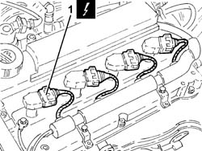
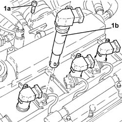
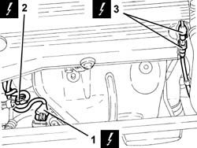
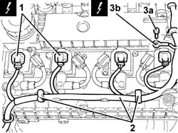
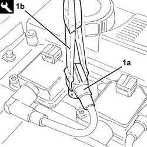
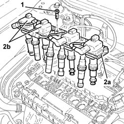

5510C14 IGNITION COIL/S - R+R
- Path
- Procedures > 55 ELECTRICAL EQUIPMENT > 5510 ENGINE IGNITION > 5510C COIL, ECU, SENSORS > 5510C14 IGNITION COIL/S - R+R
- Kind
- repair procedure (removal / refitting; the operation number is the code)
- Applies to
- engines: 1.8 T.SPARK, 2.0 JTS; all production periods
- Interactive page
- https://sloeber94.github.io/elrnDB-aGt/en/#/125001605
Applies to: engines: 2.0 JTS; all production periods
 Removing
Removing
 Refitting
RefittingMake sure that the ignition key is in the OFF position, then disconnect the negative battery terminal (-)
Description | Connector | |
|---|---|---|
- | Battery | See A1B BATTERY ( BATTERY NEGATIVE ) |
Proceed with the removal
Op. 1016A40 IGNITION COIL COVER ON CYLINDER HEAD- R+R.
1. Disconnect the electrical connections from the ignition coils.
Description | Connector | |
|---|---|---|
1 | Ignition coil | See A30 IGNITION 'COIL |

Applies to: engines: 2.0 JTS; all production periods
1. Undo the bolts (1a) and remove the ignition coils (1b).

Applies to: engines: 2.0 JTS; all production periods
Refitting
RemovingReplace the ignition coils in their housings and secure them tightening the bolts to the recommended torque.
Fastening | Component | Ø | Value (daNm) | |
|---|---|---|---|---|
- | - | - | - | - |
Connect the electrical connections to the ignition coils.
Proceed with the refitting
Op. 1016A40 IGNITION COIL COVER ON CYLINDER HEAD- R+R.
Connect the negative battery terminal (-).
Applies to: engines: 1.8 T.SPARK; all production periods
Removing
Refitting- Make sure that the ignition key is in the OFF position, then disconnect the battery terminal (-).
Description | Connector | |
|---|---|---|
- | Battery | See A001 Battery |
1. Disconnect the electrical connection for the right Lambda sensor.
Description | Connector | |
|---|---|---|
1 | Lambda sensor | See K15 LAMBDA SENSOR ON PRE-CATALYZER |
2. Disconnect the electrical connection for the air conditioner compressor.
Description | Connector | |
|---|---|---|
2 | Air conditioning compressor engagement electro-magnet | See L20 AIR CONDITIONING COMPRESSOR ENGAGEMENT SOLENOID |
3. Disconnect the electrical connection for the left Lambda sensor.
Description | Connector | |
|---|---|---|
3 | Lambda sensor | See K16 LAMBDA SENSOR ON PRE-CATALYZER-2 |

Applies to: engines: 1.8 T.SPARK; all production periods
1. Disconnect the electrical connections from the ignition coils.
Description | Connector | |
|---|---|---|
1 | Ignition coil | See A30 IGNITION 'COIL |
2. Release the electrical wiring from the fastenings on the tappet cover.
3. Undo the bolt (3a) and disconnect the earth lead (3b) from the ignition coil single mounting plate.
Description | Connector | |
|---|---|---|
3b | Earth on engine | See C40 ENGINE EARTH |

Applies to: engines: 1.8 T.SPARK; all production periods
- Disconnect the high tension lead caps (1a) from the spark plugs using the tool (1b).
Description | Code | |
|---|---|---|
1b | Caliper | 1.820.636.000 |

Applies to: engines: 1.8 T.SPARK; all production periods
- Undo the bolts fixing the ignition coil single support plate.
- Pull the plate (2a) upwards complete with ignition coils (2b).

Applies to: engines: 1.8 T.SPARK; all production periods
- At the bench, undo the bolts and separate the ignition coils from the plate.
Applies to: engines: 1.8 T.SPARK; all production periods
Refitting
Removing- Place the plate complete with ignition coils in position.
- Tighten the bolts fixing the ignition coil single support plate.
- Connect the caps for the high tension leads to the spark plugs.
- Connect the earth lead to the ignition coil single mounting plate and secure it using the bolt.
- Secure the electrical wiring using the fastenings to the tappet cover.
- Connect the electrical connections to the ignition coils.
- Connect the electrical connection for the left Lambda sensor.
- Connect the electrical connection for the air conditioner compressor.
- Connect the electrical connection for the right Lambda sensor.
- Op. 1016A40 IGNITION COIL COVER ON CYLINDER HEAD- R+R
- Connect the negative battery terminal (-).